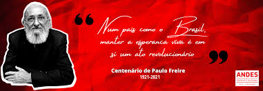
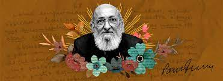
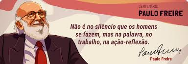

Paulo Reglus Neves Freire foi um educador e filósofo brasileiro. É considerado um dos pensadores mais notáveis na história da pedagogia mundial, tendo influenciado o movimento chamado pedagogia crítica. É também o Patrono da Educação Brasileira.
A metodologia de Paulo Freire consiste em uma maneira de educar conectada ao cotidiano dos estudantes e às experiências que eles têm — e por isso, também ligado à política, especialmente porque Freire trabalhou com a alfabetização de adultos. Sua filosofia baseia-se no diálogo entre professor e aluno, procurando transformar o estudante em um aprendiz ativo. Nesse sentido, ele criticava os métodos de ensino em que o professor era tido como o detentor de todo o conhecimento, e o aluno apenas um “depositório” — o que ele chamava de “educação bancária”.
Com a missão de educar para transformar, o desejo de Paulo Freire era reunir educadores entusiastas do seu método e aqueles que acreditavam que a educação tinha potencial social transformador. O Instituto foi criado pelo pedagogo no dia 12 de abril de 1991 e se tornou uma Fundação oficial em setembro de 1992. Paulo Freire participou de todo o processo de criação do Instituto, desde a escolha do nome até do funcionamento da estrutura interna definindo o estatuto. Nos dias de hoje, o Instituto conta com membros dispersos em mais de 90 países que ajudam a espalhar a palavra do educador. A lei brasileira número 12.612, criada em 2012, define Paulo Freire como o patrono da educação brasileira. A lei é um reconhecimento de todo o trabalho desenvolvido pelo educador ao longo da vida.
